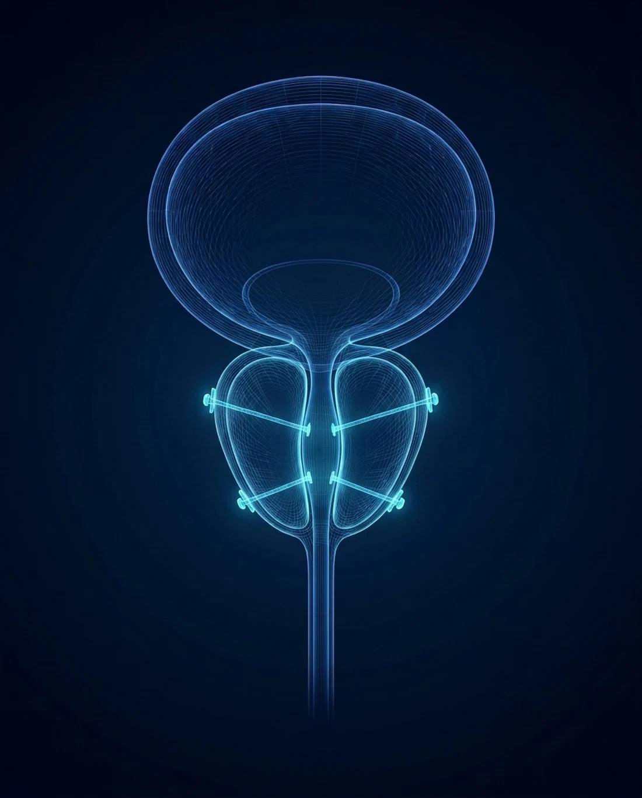

Tiny implants,
immediate relief
The UroLift System places tiny permanent implants that lift the enlarged prostate lobes away from the urethra and hold them open, and flow often improves right away. No cutting, no heat, and typically no catheter.

How UroLift works
An enlarged prostate squeezes the urethra and obstructs flow. Rather than cutting or heating tissue, UroLift places tiny permanent implants that pull the prostate lobes apart and hold them open, like tiebacks on a curtain, so urine can pass freely again.
Because nothing is removed, cut, or heated, relief is immediate and recovery is quick. The procedure is done right in the office, usually in under an hour, and most men leave without a catheter. Dr. Sawkar is recognized as a UroLift Center of Excellence.
Local anesthesia
A numbing agent is applied in the office. No general anesthesia is required for most men.
Scope placed
A slim scope is passed through the urethra to view the prostate and plan each implant.
Implants placed
Tiny permanent implants are delivered to lift the lobes apart and hold them open.
Immediate relief
The urethra opens as the implants hold the tissue aside. Most men feel a rapid improvement in flow.
Why men choose UroLift
Nothing cut, heated, or removed
The implants simply hold the enlarged tissue aside. No prostate tissue is cut, burned, or taken out.
Done in the office
Performed in under an hour, typically under local anesthesia, with no general anesthesia for most men.
Usually no catheter
Most men go home the same day without a catheter and return to regular activities within days.
Rapid, lasting relief
Flow often improves right away, and the durable implants are designed to hold that relief over time.

See if UroLift is right for you
Same-day and next-day appointments. UroLift is typically covered by Medicare and most commercial plans, with telehealth consultations available. For the fastest response, send the office a secure message; the reply comes back by text.
Chief of Urology, Providence St. Joseph Hospital · UroLift Center of Excellence · Orange County's highest-volume Aquablation surgeon